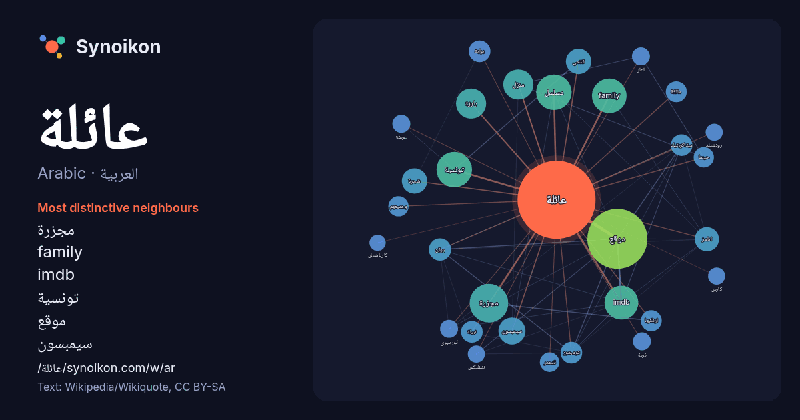

العربية · Arabic · popular word
عائلة
“family” · The words found around it in 1295 instances from Arabic Wikipedia, Wikiquote.

Most distinctive neighbours
- مجزرة 47×
- family 41×
- imdb 38×
- تونسية 32×
- موقع 32×
- سيمبسون 25×
- بارزة 22×
- ادامز 19×
- روتن 18×
- تنتمي 18×
- توميتوز 17×
- شجرة 17×
- ميتاكريتيك 16×
- نبيلة 16×
- مسلسل 16×
- ارتكبها 16×
- وجميعهم 15×
- مالكة 15×
- تنحدر 13×
- بوابة 13×
× = how many times more often than in general Arabic Wikipedia text.
Most frequent neighbours
- موقع 123
- مجزرة 51
- تونسية 43
- مسلسل 43
- family 41
- imdb 39
- اسم 37
- واحدة 33
- اصل 31
- بارزة 31
- منزل 31
- مدينة 26
- افراد 25
- سيمبسون 25
- ابو 24
- عائلات 24
- ال 22
- امريكية 22
- تنتمي 22
- شجرة 22
In context
- علم الاجتماع، الأسرة (الجمع: أُسُرَات أو أُسْرَات أو أُسَر) أو العائلة (الجمع: عَائِلَات أو عَوَائِل) هي الخلية الأساسية في المجتمع البشري وأهم جماعاته Wikipedia snippets · أسرة
- عائلة روتشيلد (تُلفظ بالألمانية: [ˈʁo:t.ʃɪlt]) هي عائلة يهودية ثرية أصلها من فرانكفورت، تأسست على يد ماير أمشيل روتشيلد (1744-1812)، وهو مستشار مالي كان Wikipedia snippets · عائلة روتشيلد
- شجرة عائلة جنكيز خان الموجودة بالأسفل على الأشخاص الأساسيين من عائلة البورجيجين بالإضافة إلى أنها لا تصل إلى أشخاص حاليين من نفس العائلة. وعائلة بورجيجن Wikipedia snippets · شجرة عائلة جنكيز خان
- ضمن الحزام الرئيس، لكن ليس جميعها. لاكوندريت كوندريت كوندريت CI عائلة تصادمية عائلة كارين V. Zappala (1995). "Asteroid Dynamical Families – EAR-A-5-DDR-FAMILY-V4 Wikipedia snippets · عائلة كويكبات
- عائلة أريسون (الإنجليزية: Arison family) (العبرية: משפחת אריסון) هي عائلة أمريكية إسرائيلية تدير العديد من الأعمال والشركات، عائلة ثرية مليارديرة. جدهم Wikipedia snippets · عائلة أريسون
- عائلة أبيض وأسود هو مسلسل كوميدي كويتي من تأليف حامد حنفي وإخراج حسن إبراهيم العرض الأول 6 نوفمبر 2002 غانم الصالح انتصار الشراح محمد العجيمي منى شداد Wikipedia snippets · عائلة أبيض وأسود (مسلسل)
- عائلة باتوري (بالمجرية: Báthory család) عائلة نبيلة مجرية من أصل ألماني، كانت لها نفوذ في أوروبا الوسطى بين عامي 1480 و1680. من أشهر شخصياتها الكونتيسة Wikipedia snippets · عائلة باتوري
- عائلة مزالي ( (بالعربية: أهل مزالي) ) هي عائلة تونسية ، خدم أفرادها في القضاء والجيش والإدارة. وكان لها دور في تاريخ تونس المعاصر. محمد صلاح مزالي ، في Wikipedia snippets · عائلة مزالي
More Arabic words
- أغنية
- إله
- تاريخ
- جبل
- جرس
- جزيرة
- جسر
- حديقة
- حصان
- حقيقة
- حياة
- خبز
- خريطة
- خريف
- ذهب
- زمن
- ساعة
- شاي
- شتاء
- صحة
- صحراء
- صمت
- صيف
- طبيعة
- طريق
- طعام
- ظل
- عاصفة
- عسل
- علم
- عمل
- غابة
- فن
- قطار
- قطة
- قلب
- قوة
- كلب
- لغة
- ماء
- مال
- مدينة
- مرآة
- مطر
- ملح
- مناخ
- موت
- نجم
- والدة
Precomputed on 2026-10-09 with default settings (±5 words, medium corpus). The interactive map can refresh it with live data.